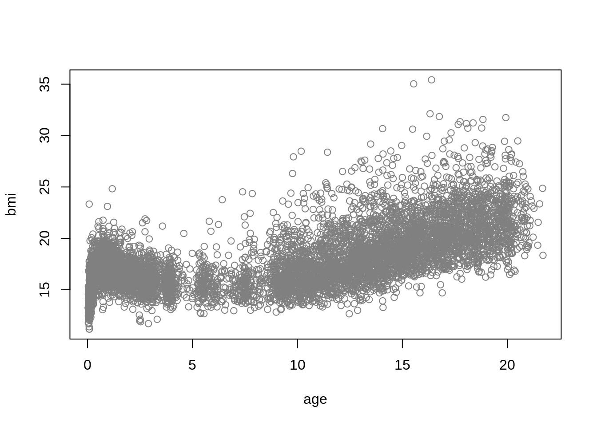
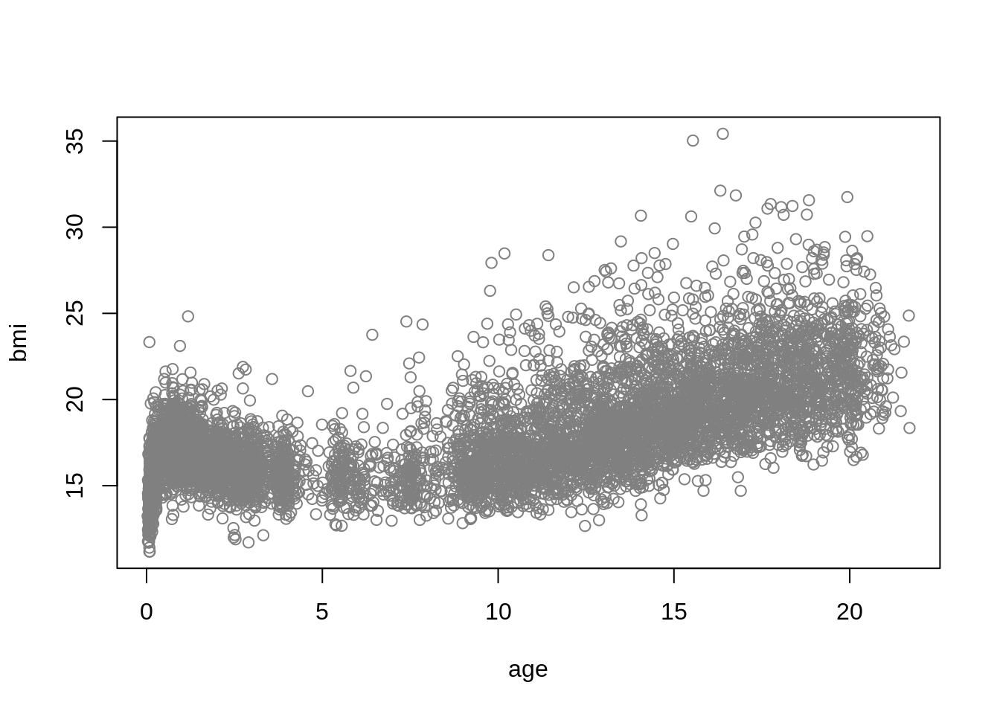

## load package and data
library("gamlss2")
data("dbbmi", package = "gamlss.data")
## plot the data
plot(bmi ~ age, data = dbbmi, col = gray(.5))
Centile estimation or quantile estimation is a powerful approach in statistics that provides insights into the distributional characteristics of a response variable at various values of one of the explanatory variables. A centile is a quantile value multiplied by 100.
The LMS methods of Cole and Green (1992) is a subset of the GAMLSS model of Rigby and Stasinopoulos (2005). The BCPE distribution of Rigby and Stasinopoulos (2004), was used by WHO to create of child growth standards which are now used in over 150 countries. Centiles (quantiles) provide information about the entire distribution of the response variable rather than estimating just the mean (as in traditional regression).
In this vignette, we demonstrate how to estimate quantiles (e.g., the 10th, 50th, and 90th percentiles) using gamlss2.
Specifically, we will cover:
In this example we use the Dutch boys BMI data, dbbmi, from the package gamlss.data. More infomation about the data can be found in Section 13.1.3 of Stasinopoulos et al. (2017). The dataset consists of \(7294\) rows and \(2\) columns, containing the variables bmi and age.
## load package and data
library("gamlss2")
data("dbbmi", package = "gamlss.data")
## plot the data
plot(bmi ~ age, data = dbbmi, col = gray(.5))
Due to the sharp upward trend in BMI at the lower end of age, we will apply a square root transformation (sqrt()) to the age variable to facilitate the fitting of the centile curves. The transformed data are plotted below:
Next, we will fit three different models to the data. The first model uses the Box-Cox Cole and Green distribution (BCCGo), which has three parameters: \(\mu\), \(\sigma\), and \(\nu\). These parameters represent the location, scale, and skewness of the distribution, respectively. The BCCGo distribution is almost equivalent to fitting the Cole and Green (LMS) method.
## model formula as list
## note that we set up 4 formulas for
## the more complex families later.
f <- ~ pb(sqrt(age))
f <- rep(list(f), 4)
f[[1]] <- update(f[[1]], bmi ~ .)
## estimate model
m1 <- gamlss2(f, data = dbbmi, family = BCCGo)GAMLSS-RS iteration 1: Global Deviance = 29306.5604 eps = 0.264607
GAMLSS-RS iteration 2: Global Deviance = 29192.9585 eps = 0.003876
GAMLSS-RS iteration 3: Global Deviance = 29185.1133 eps = 0.000268
GAMLSS-RS iteration 4: Global Deviance = 29184.1597 eps = 0.000032
GAMLSS-RS iteration 5: Global Deviance = 29184.1352 eps = 0.000000 The second model uses the Box-Cox power exponential distribution (BCPEo), which has four parameters: \(\mu\), \(\sigma\), \(\nu\), and \(\tau\). These parameters represent the location, scale, skewness, and kurtosis of the distribution, respectively.
GAMLSS-RS iteration 1: Global Deviance = 29373.553 eps = 0.284491
GAMLSS-RS iteration 2: Global Deviance = 29166.7255 eps = 0.007041
GAMLSS-RS iteration 3: Global Deviance = 29152.7734 eps = 0.000478
GAMLSS-RS iteration 4: Global Deviance = 29152.1736 eps = 0.000020
GAMLSS-RS iteration 5: Global Deviance = 29152.1599 eps = 0.000000 The final model uses the Box-Cox t distribution (BCTo), also with four parameters: \(\mu\), \(\sigma\), \(\nu\), and \(\tau\), representing location, scale, skewness, and kurtosis, respectively. The key difference between BCPEo and BCTo is that BCPEo can handle both platykurtic and leptokurtic distributions, while BCTo is limited to leptokurtic distributions. Detailed definitions of these three "gamlss.family" distributions can be found in Chapter 19 of Rigby et al. (2019).
GAMLSS-RS iteration 1: Global Deviance = 29167.1765 eps = 0.218025
GAMLSS-RS iteration 2: Global Deviance = 29143.0977 eps = 0.000825
GAMLSS-RS iteration 3: Global Deviance = 29142.3472 eps = 0.000025
GAMLSS-RS iteration 4: Global Deviance = 29142.1955 eps = 0.000005 We can now select the best-fitting model using the generalized Akaike Information Criterion (GAIC), implemented in the GAIC() function.
Note that all models were fitted using the square root transformation (sqrt()) for age to facilitate the smoothing function, pb(). Also, by default, the GAIC() function uses the classical Akaike Information Criterion (AIC). Based on the AIC, the m3 model appears to provide the best fit.
Several diagnostic tools are available to assess the adequacy of a fitted model. One useful tool is the worm plot, a detrended Q-Q plot that provides valuable insight into the fit of the distribution. The plot can be generated with
Our preferred approach is to use the resid_wp() function from the gamlss.ggplots package, as it provides additional useful information.
The function model_wp() can be use for multiple model worm plots.
One of the advantages of the gamlss.ggplots package is its ability to split the worm plot into different age ranges, which is useful for detecting model inadequacies across various age groups. Here’ s how you can use the model_wp_wrap() function:
To obtain plots or tables of fitted centile curves, we can use the gamlss2 generic quantile() method to generate a table of predicted values. We then use these values to plot the relevant curves. First, we create a grid for age with a length of 300 and use it to predict the relevant quantiles.
## set tup new data for prediction
nd <- with(dbbmi, data.frame("age" = seq(min(age), max(age), length = 300)))
## compute quantiles/centiles
qu <- c(0.02, 0.10, 0.25, 0.50, 0.75, 0.90, 0.98)
fit <- quantile(m3, newdata = nd, probs = qu)
## estimated values
head(fit) 2% 10% 25% 50% 75% 90% 98%
1 11.20725 12.09278 12.75882 13.50573 14.30283 15.10974 16.35648
2 12.33387 13.26385 13.96394 14.74787 15.58075 16.41769 17.69525
3 13.05537 14.01173 14.73189 15.53745 16.39101 17.24505 18.53968
4 13.58129 14.55547 15.28902 16.10882 16.97577 17.84063 19.14547
5 13.97783 14.96424 15.70684 16.53615 17.41186 18.28358 19.59438
6 14.27853 15.27310 16.02164 16.85707 17.73829 18.61413 19.92805Now we plot the data and then fitted curves.
## plot estimated curves
par(mar = c(4, 4, 1, 1))
plot(bmi ~ age, data = dbbmi, pch = 16, col = rgb(0.1, 0.1, 0.1, alpha = 0.1))
matplot(nd$age, fit, type = "l", lwd = 2, lty = 1, col = 4, add = TRUE)A more elegant plot can be generated using the fitted_centiles() or fitted_centiles_legend() functions from the gamlss.ggplots package. For example:
The gamlss2 package offers the appropriate models and tools for generating centile curves. For more detailed information and diagnostics related to centile curve estimation, refer to Chapter 13 of Stasinopoulos et al. (2017). Additionally, the gamlss.ggplots package provides useful extra functions for plotting and diagnostics.